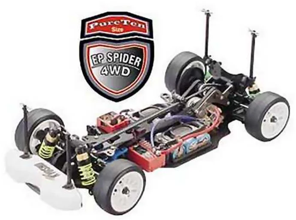

京商 PureTen EPスパイダーTF-4 Type R

引用元画像：rcscrapyard.net
📋 基本情報
| メーカー | 京商（Kyosho） |
|---|---|
| 機種名 | PureTen EPスパイダーTF-4 Type R（PureTen EP Spider TF-4 Type-R） |
| シャーシ略称 | TF-4R / TF-4 Type-R |
| 型番 | 30911（Chassis Kit） |
| 発売時期 | 2000年 |
| 生産状況 | 生産終了 |
| カテゴリー | ラジコンカー（1/10スケール 電動RCカー） |
| サブカテゴリー | ツーリングカー（4WD）- レーシング仕様 |
📏 シャーシスペック
| フレーム | ダブルデッキシャーシ |
|---|---|
| 駆動方式 | 4WD（ベルトドライブ） |
| デフギヤ | ボールデフ |
| センターワンウェイ | センターワンウェイ機構搭載 |
| サスペンション | 4輪ダブルウィッシュボーン独立懸架 |
| ダンパー | オイル入りコイルスプリングダンパー |
| ドライブシャフト | ユニバーサルジョイントドライブシャフト |
| ベアリング | フルボールベアリング |
| バッテリー対応 | スティックパック / サドルパック両対応 |
💡 特徴
EPスパイダーシリーズの最終進化形
- 2000年発売のEPスパイダーシリーズ最終進化形「TF-4 Type-R」
- ベルトドライブ4WDシステム継承
- ボールデフ標準装備
- センターワンウェイ機構搭載
レーシング志向の高性能装備
- オイルダンパー標準装備
- フルボールベアリング仕様
- ユニバーサルジョイントドライブシャフト
- 高い調整性と拡張性
バッテリーレイアウトの柔軟性
- スティックパック・サドルパック両対応
- バッテリー位置による前後バランス調整可能
- ドライバーの走行スタイルに合わせたセッティング可能
🔧 ぽすとそに工房での修理実績
修理難易度
★★★★★（非常に困難）
パーツ供給がなく、入手困難な機種です。修理には高度な技術と代替パーツの知識が必要です。
よくある故障・注意点
- ベルトの劣化・摩耗（代替品の入手困難）
- ボールデフの摩耗・オイル漏れ
- センターワンウェイの摩耗
- オイルダンパーのオイル漏れ
- ユニバーサルジョイントの摩耗
- プラスチックパーツの経年劣化
修理のポイント
- ベルトは定期的にテンション確認（中央部5mm程度の押し込み）
- ベルト駆動プーリーの摩耗チェック
- ボールデフのオイル交換とOリング交換
- センターワンウェイの定期的なグリスアップ
- オイルダンパーのOリング交換とオイル補充
- ボールベアリングの清掃・注油
その他の特徴
- EPスパイダーシリーズの集大成モデル
- TF-3の技術を継承した最終進化形
- 現代のESCやモーターへの換装推奨
- 修理には他機種の流用パーツ知識が必須
- コレクターズアイテムとしての価値が高い